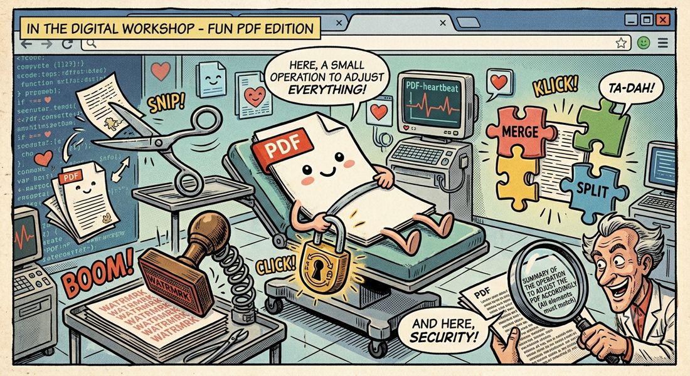

← Torna ai progettipdfhandler
Il tuo toolkit PDF nel browser. Estrai, ruota, unisci, dividi, filigrane, cifratura — 15+ strumenti, tutto client-side, zero upload.
📖 Cos'è
pdfhandler è un toolkit PDF completo interamente browser-based, senza upload. Costruito con React 19, TypeScript e Tailwind, offre 15+ strumenti in due modalità: Viewer (lettura con zoom, scroll, TOC) ed Editor (modifica non-distruttiva). Supporta estrazione pagine, merge drag-and-drop, split per pagine/bookmark, rotazione, filigrane testo/immagine, numerazione, crittografia AES-256-GCM, modifica metadati e molto altro. Il TOC viene automaticamente preservato attraverso ogni operazione.
👤 A chi serve
pdfhandler è per chiunque lavori regolarmente con PDF e cerchi strumenti rapidi senza software pesante. Professionisti (contratti, fatture, documenti legali) possono unire, dividere e filigranare in pochi click. Ricercatori apprezzano estrazione e numerazione per riorganizzare paper. Chi tiene alla privacy trova un'alternativa sicura ai servizi online: i file non lasciano mai il computer. Designer beneficiano della composizione avanzata e del drag-and-drop. Funziona offline dopo il primo caricamento.
⚙️ Come funziona
Due modalità complementari. Il Viewer (pdfjs-dist) offre navigazione singola/doppia/tripla, zoom, TOC laterale e scorciatoie. L'Editor ha Page Tools (extract, delete, rotate, copy/move, reverse, reorder, split, merge, compose) che manipolano la struttura via pdf-lib preservando i bookmark. I Document Tools gestiscono metadati, watermark (testo con font/opacità; immagine con scala), numeri pagina, pagine bianche, esportazione PNG, estrazione testo e cifratura AES-256-GCM. Test E2E con Playwright.
✨ Design Principles
- Non-destructive — Il PDF originale non viene mai modificato; ogni operazione produce nuovi file
- TOC-aware — Molte operazioni preservano e aggiornano automaticamente l'indice dei contenuti (bookmarks)
- Offline-first — Tutta l'elaborazione avviene lato client con pdf-lib e pdfjs-dist. Nessun dato lascia la tua macchina
- Keyboard-friendly — Il viewer supporta scorciatoie da tastiera per navigazione e zoom
📖 Viewer Mode
Un lettore PDF veloce e scrollabile con layout configurabili: pagina singola, doppia, o 3 colonne. Zoom manuale, fit-to-width, rotazione. Pannello TOC laterale con navigazione cliccabile. Scorciatoie: ↓↑ per scroll, PageDown/Up per pagine, +/- per zoom.
✂️ Editor Mode — Page Tools
- Extract — Estrai pagine (file unico o ZIP con una per pagina), opzionalmente elimina dopo estrazione
- Insert/Replace — Inserisci o sostituisci pagine da un altro PDF, TOC automaticamente rimappato
- Delete — Rimuovi pagine, bookmarks ripuliti e rinumerati
- Rotate — Ruota di 90°, 180° o 270° (accumulativo)
- Copy/Move — Duplica (1-99 copie) o sposta pagine, TOC preservato e rimappato
- Reverse — Inverti ordine pagine (tutte o selezione)
- Split — Dividi per numero pagine, N parti uguali, range personalizzati, o per bookmarks TOC
- Merge — Unisci più PDF, riordina file via drag-and-drop
- Reorder — Riordina pagine via drag & drop o swap numerico, TOC completamente rimappato
- Compose — Assembla un nuovo PDF da range di pagine di multiple fonti (merge non-lineare)
📋 Editor Mode — Document Tools
- Info — Dettagli file: dimensione, pagine, dimensioni pagina, metadati
- Metadata — Modifica titolo, autore, soggetto, keywords
- Watermark (Text) — Testo con font, opacità, colore RGB, angolo, posizione configurabili
- Watermark (Image) — Immagine PNG/JPEG con scala e opacità
- Page Numbers — Numerazione con formato custom {n}/{t}, posizione e numero di partenza
- Add Blank Pages — Inserisci pagine A4/Letter all'inizio, fine o dopo una pagina specifica
- Export Images — Esporta pagine come PNG a 1.5× in ZIP
- Extract Text — Estrai tutto il testo in .txt con header per pagina
- Encrypt/Decrypt — AES-256-GCM con PBKDF2 (100k iterazioni), salt e IV random
🔐 TOC Preservation
pdfhandler è costruito per preservare i bookmark PDF attraverso operazioni distruttive. Delete, rotate, copy, move, reverse, reorder, insert, replace e split aggiornano automaticamente l'indice.
Il TOC viene estratto via pdfjs-dist.getOutline() e riscritto con le API di pdf-lib.
🧪 Testing
Test end-to-end con Playwright: smoke test, tutti i page tools, tutti i document tools, TOC preservation. Deploy su Cloudflare Pages con build automatica da GitHub.